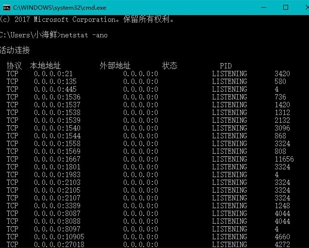
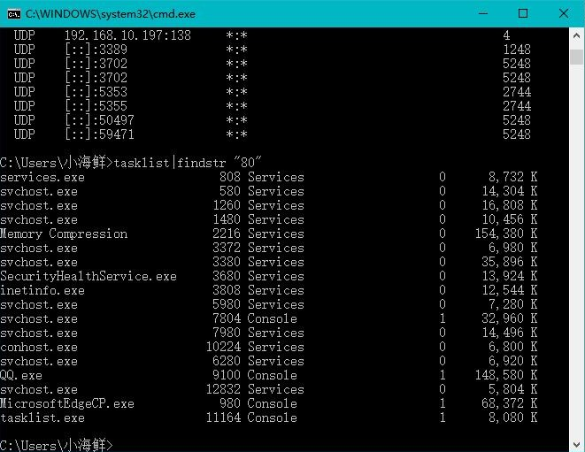
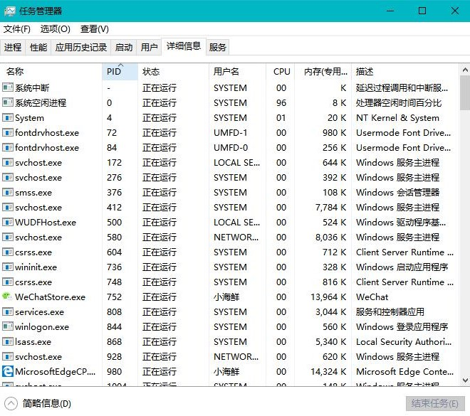

尝试办法1：
我想前一天可以正常使用，今天发现apache服务器无法启动，端口无故被占用，可能导致手机无法连接服务器，于是查询80端口被谁占用了。
端口查询方法：
1.开始---->运行---->cmd，或者是window+R组合键，调出命令窗口
2.输入命令：netstat -ano，列出所有端口的情况。在列表中我们观察被占用的端口，比如是49157，首先找到它。



结果1：端口被意外程序占用，关闭不成功。没办法了，只能改端口了，httpd.conf listen修改成8000，apache启动成功，不过手机输入localhost:8000,显示未连接，但是输入localhost显示404，两种截然不同的概念。
尝试办法2：
介于白天新装的gcc程序，怀疑改动注册表了，于是卸载gcc，清理注册表，重装wamp
注意：
备份数据库。。。。重中之重。我只记得把www下的毕设备份出来，忘记备份wamp自带数据库的数据了。然后很悲剧，比着代码又添加了数据库。做一件事情，明明你都做了一遍，还是很枯燥的完成的，当你没备份，需要再做一遍的时候，你手里的冰淇淋就和我当时的心一样凉。
结果2：重装后链接继续失败
最终结果：
第三天，我安装iis服务，莫名把之前的“莫名程序”占用的端口“夺取”回来了？？（问号脸??）不管了，既然iis输入localhost能正常使用80端口，那我就把iis服务关闭，然后打开wamp，apache启动成功！手机测试链接。。。。。成功！！